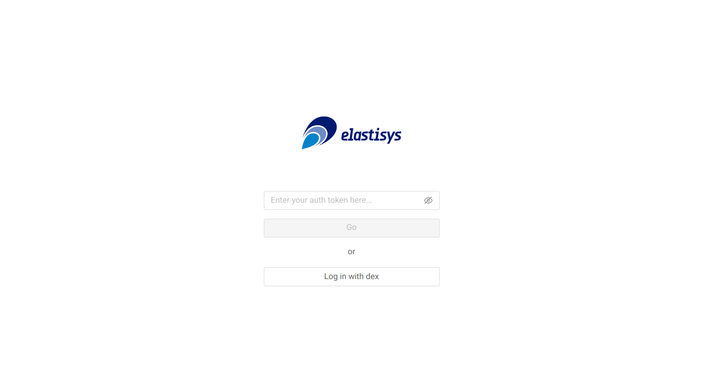
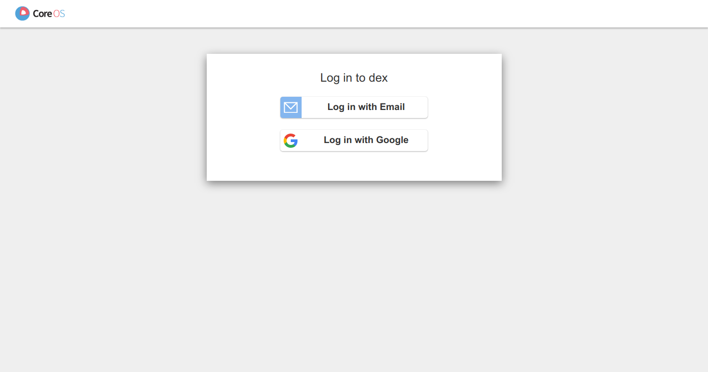
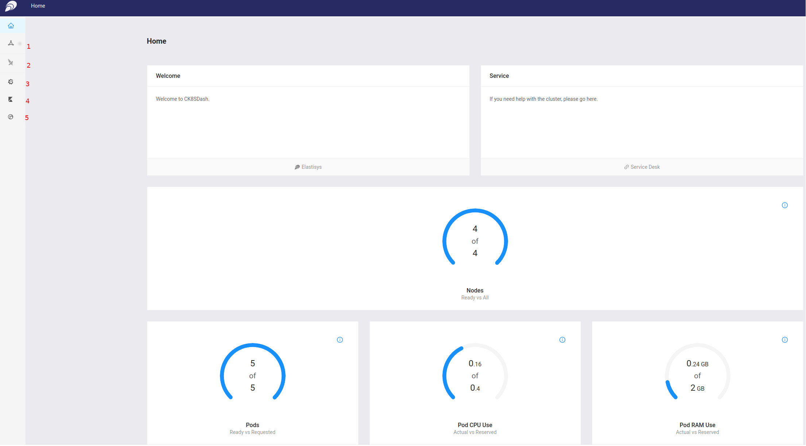
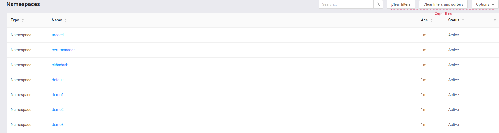
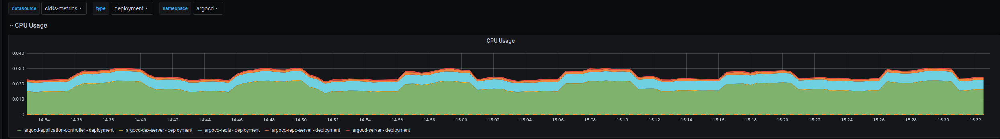
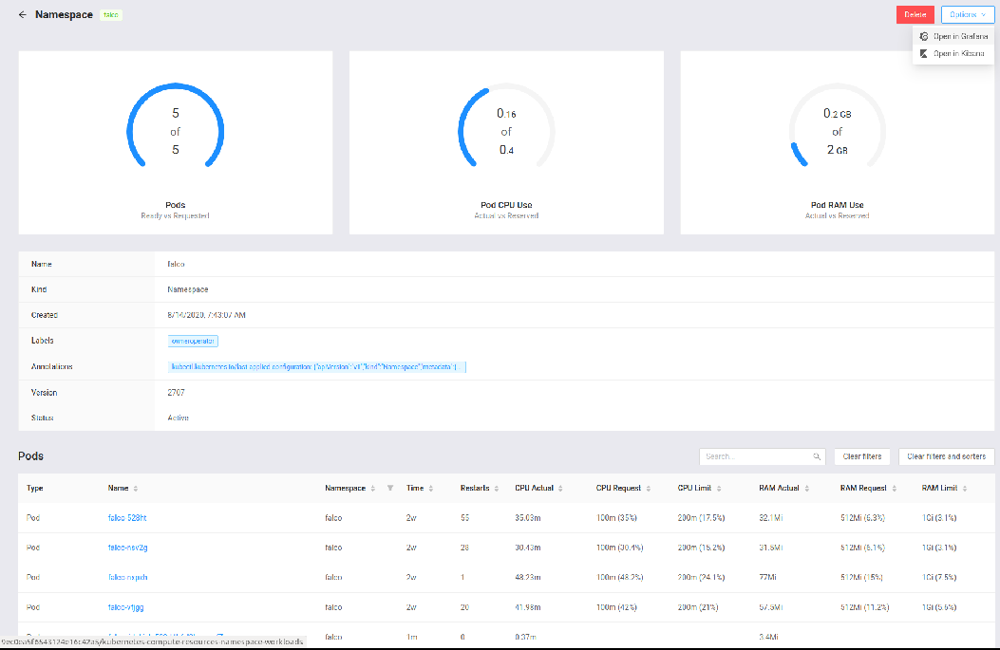
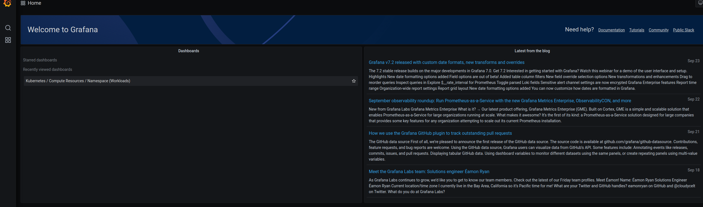

Compliant Kubernetes (CK8s) Dashboard
To facilitate continuous compliance, Compliant Kubernetes comes with a "single pane of glass" to present all aspects of the cluster that are relevant for internal or external auditing.
The CK8s Dashboard provides different visualizations regarding the state of the cluster. It has a set of panels organized and arranged into one or more rows. Each panel visualizes different aspect of the system. The different visualizations can be broadly divided into the following five categories.
- Cluster: Information regarding the state of the state
- Falco: Runtime security threat monitoring and detection
- Grafana: Metrics visualization and analytics
- Elastic: Log visualization and analytics
- Harbor: Manage and serve container images in a secure environment
Authenticating
You should have received the URL of the dashboard from your Compliant Kubernetes operator. Otherwise, simply contact support. After typing the URL, you will be presented with a window for choosing the login method:

Choose "Log in with dex". You will see the image below:

Depending on how Compliant Kubernetes is setup for you, click on the Identity Provider you prefer, or login using a statically configured username and password.
Home Screen
Once logged into the dashboard, you will get the main page similar to the figure below.

The left panel in the figure shows the link to the five categories:
- cluster
- Falco
- Grafana
- Elastic
- Harbor
The central part presents different panels with summary information, e.g., number of Nodes, Pods, CPU and RAM usage, about the cluster.
Cluster: How to get detail information about the cluster
To get information about the state of the cluster, please click the Cluster icon from the left panel in the main page. You will get a page similar to the one shown below.

The cluster dashboard contains three tabs, namely Cluster, Namespaces and Nodes which are located on the top right side aligned horizontally (i.e., labeled Tabs in the figure). By default the Cluster tab is selected when you click the cluster icon from the main left panel. To distinguish the selected tab from the rest the color of the selected tab label is blue along with blue underline.
The Cluster tab has four different panels displaying aggregate information about Nodes, Pods, Pods CPU Use and Pods RAM use.
The Namespaces tab provides information about the different namespaces in the cluster.
To get information about namespaces:
Select the Namespaces tab under cluster dashboard. A panel with list of namespaces in the cluster with their status and how long they have been created will be displayed. The panel looks like the figure below.

To get different metric information about each namespace, hover your mouse on the options dropdown menu on the top left side under Namespaces tab (i.e., labeled capabilities in the figure above) and click Open in Grafana. You will be redirected to grafana website. By default different visualizations about the first namespace, argocd in this example, will be loaded by Grafana. You can change the namespace you if want to see for a different namespace. The following figure shows one of the visualizations loaded by grafana.

To get further information about each namespace, click on the namespace you want to get more information. Depending on your privilege, you will get one of the following pages.
-
If you do not have privilege, you will get the following error message
-
If you have privilege to access the namespace, you will get the following page with different panels.

As you can see in the figure, the different panels provide detail as well as aggregate information about Pods, CPUs and RAM for the selected namespace.
If you want to zoom in further and get more information about pods, you can select one pod at a time and get a detailed information.
Falco: How to get runtime security issues
Falco is a cloud-native runtime security system that monitors file changes, network activity, the process table, and other data for suspicious behavior. It inspects events at the system call level of a host through a kernel module or an extended BPF probe. Falco contains a rich set of rules that you can edit for flagging specific abnormal behaviors and for creating allow lists for normal computer operations. To get information about security issues, if any, please click the Falco icon from the left panel in the main page. You will get a page similar to the one shown below.

For more details, see Falco.
Grafana: Metrics visualization and analysis
Grafana is used to provide visualizations about the system based on different metrics collected from the system. To get such visualization, please click the Grafana icon from the left panel in the main page. You will be redirected to grafana website. You will land to a page similar to the figure shown below.

To learn more on how to explore the Grafana dashboard, please visit the official Grafana website.
Elasticsearch: Log visualization and analysis
Open Distro for Elasticsearch is used for logs visualization and analytics. To visualization and analytics logs, please click the Elastic icon from the left panel in the main page. You will be redirected to Kibana website.
For more details, see Elasticsearch/Kibana.
Harbor: private container registry
Harbor is used to manage and scan container images to ensure that there no any vulnerability. To access Harbor, please click the Harbor icon from the left panel in the main page. You will be redirected to Harbor website.
For more details, see Harbor.